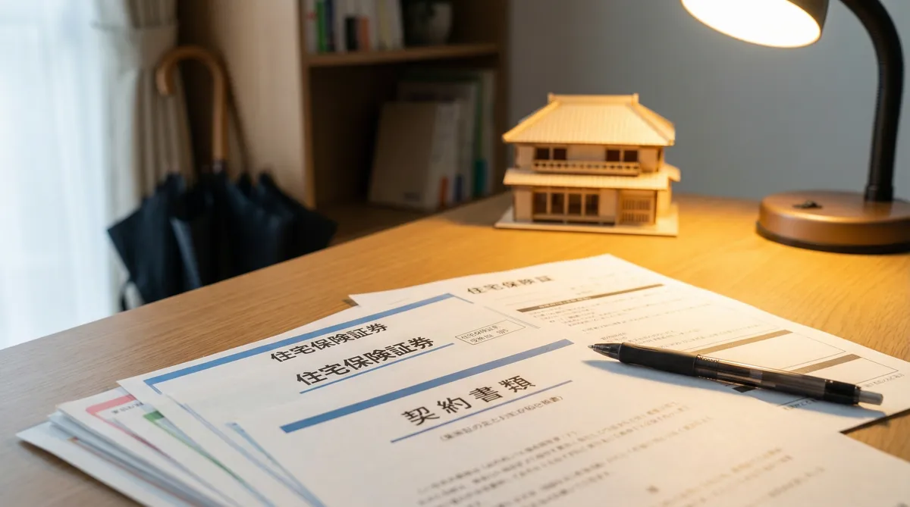
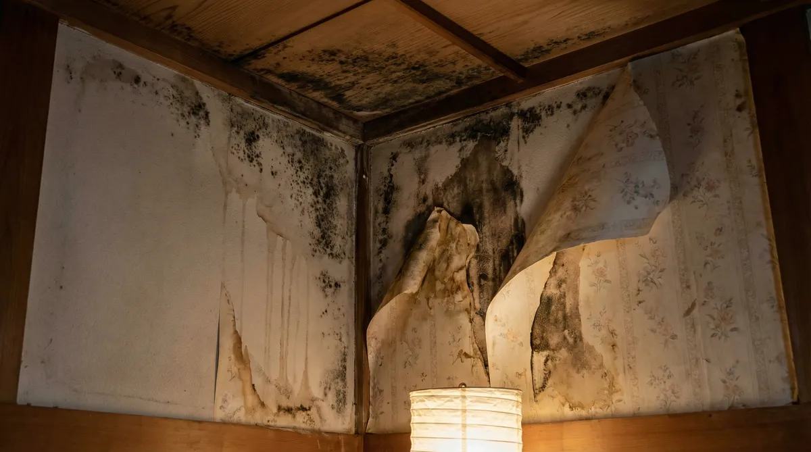
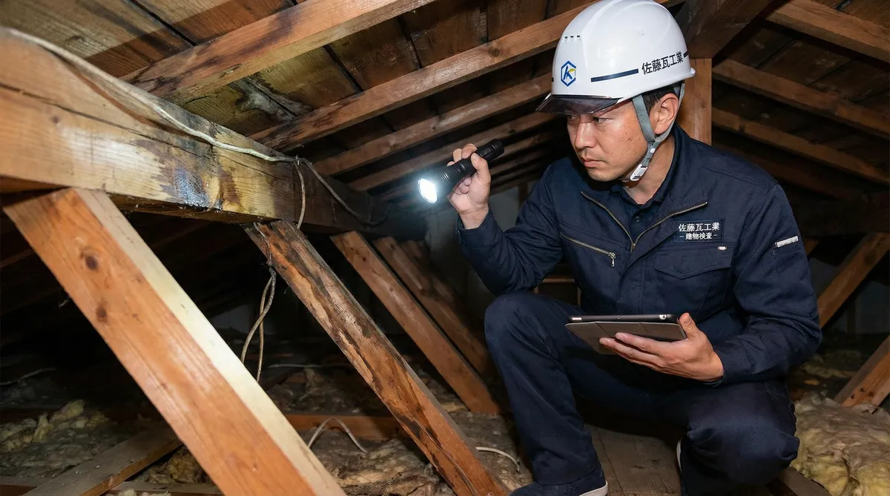
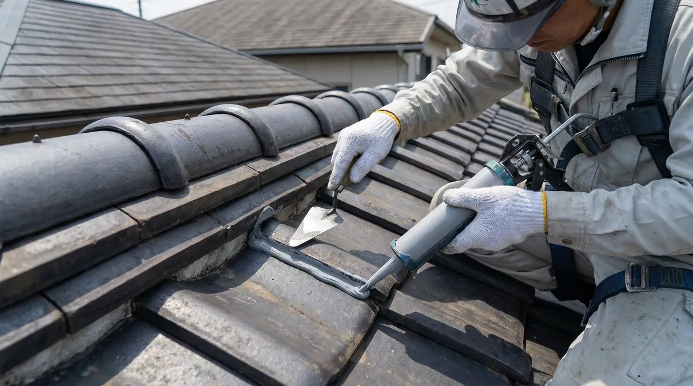

雨漏りは火災保険で直る？適用条件・申請の流れ・注意点を解説

「雨漏りの修理、火災保険を使えないかな？」——天井のシミに気づいたとき、多くの人がまず考えることだと思います。実は雨漏りは、原因によって火災保険の対象になることもあれば、ならないこともあるトラブルです。
この記事では、火災保険が適用されやすいケース・対象外になりやすいケース、保険金請求の流れ、そして「保険金で無料になります」という訪問業者トラブルへの注意点まで、公的機関の公開情報をもとにまとめました。適用の可否を最終的に判断するのは保険会社です。この記事はあくまで一般的な傾向の整理であり、個別の可否を保証するものではない点をご理解のうえお読みください。
結論：火災保険の対象になるかは「原因」で決まる
雨漏りに火災保険（主に風災・雹災・雪災補償）が使えるかどうかは、雨漏りの原因が自然災害によるものかどうかで大きく変わります。台風の強風で屋根材がずれて雨漏りした、というようなケースは対象になりうる一方、経年劣化によるコーキングの劣化が原因の雨漏りは、原則として対象外とされています。
大事なのは、「うちの場合は対象になるか」を自分で断定しないこと。最終的な判断は、保険会社が現場の被害状況を個別に確認したうえで行います。
対象になりうるケース（風災・雹災・雪災）
多くの火災保険には、火災だけでなく自然災害による損害を補償する特約がセットになっています。雨漏りとの関係で特に関係が深いのが次の3つです。
- 風災：台風や強風で屋根材・雨樋・アンテナなどが破損し、そこから雨水が侵入したケース
- 雹災：雹（ひょう）で屋根材が割れたり穴が開いたりしたケース
- 雪災：大雪の重みで屋根・雨樋が損傷したケース（東北地方などの「すが漏れ」もこの一種とされることがあります）
対象外になりやすいケース

一方で、次のようなケースは対象外とされることが一般的です。
- コーキングの劣化、屋根材・防水層の経年劣化が原因の雨漏り
- 施工不良・メンテナンス不足が原因の雨漏り
- 地震・噴火・津波が原因の場合（これらは地震保険の補償範囲）
- 豪雨による浸水（水災）が原因の場合は、風災等とは別の「水災」補償の有無が関係します
また、契約のタイプによっては「免責方式」や「フランチャイズ方式」という仕組みがあり、一定額（契約により異なります）に満たない損害は保険金が支払われない場合があります。この金額も契約内容によって変わるため、加入している保険会社・代理店に確認するのが確実です。
保険金請求の流れと必要書類

一般的な保険金請求の流れは、おおむね次のとおりです。
① 被害状況を写真・動画で記録する
天井のシミ、破損した屋根材、濡れた家財などを、日付がわかる状態で、遠景と近景の両方撮っておきます。台風など原因がはっきりしている場合は、その日のうちに記録しておくと後の説明がスムーズです。
② 保険会社・代理店へ連絡する
加入している火災保険の保険会社または代理店に連絡し、被害状況を伝えます。保険金請求書や事故状況説明書など、必要な書類一式を案内してもらいましょう。
③ 業者に調査・見積書を依頼する
雨漏り修理業者に現地調査を依頼し、原因と修理費用の見積書を作成してもらいます。「一式」とだけ書かれた内訳のわからない見積書は、保険会社の審査で補足を求められることがあるため、工事内容ごとに金額が分かる見積書を用意してもらうと安心です。
④ 保険会社による調査・保険金の確定
必要に応じて保険会社側の鑑定人等が現地を確認し、損害額が確定されると、指定した口座に保険金が振り込まれます。
まず無料調査で被害状況を確認
※調査・見積もり無料。保険適用の可否は保険会社の判断になります。
「保険金で無料になります」という業者に注意
雨漏り・台風被害の後は、「火災保険を使えば自己負担ゼロで直せます」とうたう訪問業者が増える時期でもあります。国民生活センターも、屋根工事をめぐる「点検商法」のトラブルが増えていることに注意を呼びかけています。
- アポなしの訪問業者に、その場で屋根に上らせたり契約させたりしない
- 「保険が必ず使える」という断定は、業者ではなく保険会社の判断であることを思い出す
- 少しでも不安を感じたら、契約前に消費生活センター（消費者ホットライン188）に相談する
- 訪問販売で契約してしまった場合も、書面受領から8日以内ならクーリング・オフができることがある
不安なときは、お住まいの市区町村の消費生活センターや、住宅リフォーム・紛争処理支援センターの「住まいるダイヤル」（0570-016-100）に相談できます。
雨漏り修理の費用相場

保険が適用されなかった場合に備えて、一般的な費用の目安も知っておくと安心です。
| 工事内容 | 費用目安 |
|---|---|
| コーキング補修・部分補修 | 5千円〜30万円 |
| 屋根材の部分交換 | 1万〜50万円 |
| 屋根カバー工法 | 50万〜250万円 |
| 屋根の葺き替え | 70万〜400万円 |
※建物の状態・使用材料により変動します。正確な金額は現地調査のうえでの見積もりをご確認ください。
よくある質問
雨漏りが始まった正確な時期がわからないのですが、申請できますか？
時期が特定できなくても相談自体は可能です。ただし原因が自然災害によるものと判断しにくくなるため、保険会社や業者に正直に経緯を伝え、現地調査の結果をもとに相談するのが現実的です。
火災保険を使うと、翌年以降の保険料は上がりますか？
自動車保険のような等級制度とは異なり、火災保険は一般的に利用したからといって保険料が上がる仕組みにはなっていないとされています。ただし契約内容によって異なる場合があるため、気になる場合は保険会社に確認しましょう。
保険金が修理費用より多く出た場合、差額は自由に使えますか？
保険金の使い道に法的な制限はないとされていますが、あくまで一般論です。契約内容によって扱いが異なる可能性もあるため、不明な点は保険会社に確認してください。
火災保険に入っていない場合はどうすればいいですか？
火災保険（風災等の補償）に未加入の場合、自然災害が原因でも保険金は受け取れません。その場合は実費での修理となるため、複数の業者から無料見積もりを取って比較することをおすすめします。
近所から飛んできた物が原因で雨漏りした場合はどうなりますか？
台風などで飛来した物による被害も、契約内容によっては風災として扱われることがあります。相手が特定できる場合の損害賠償の扱いも含め、詳しくは保険会社に確認しましょう。